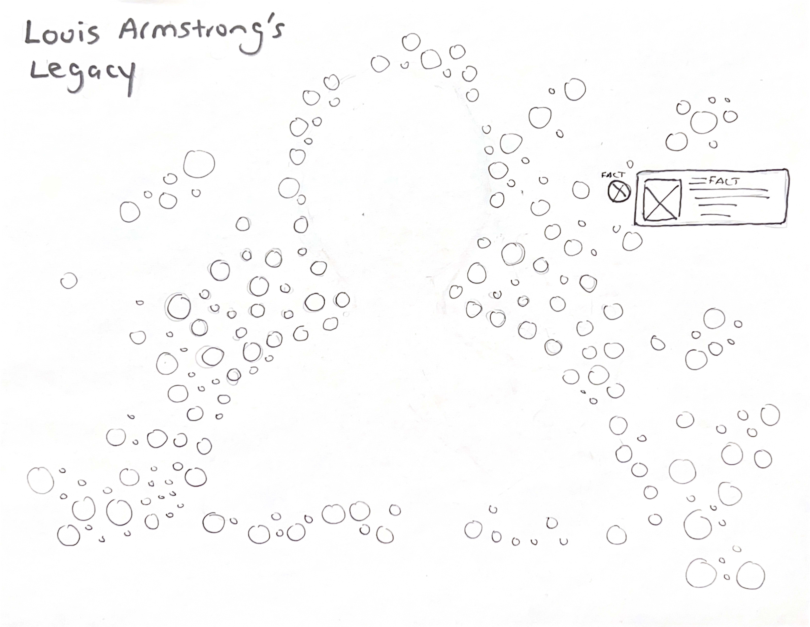
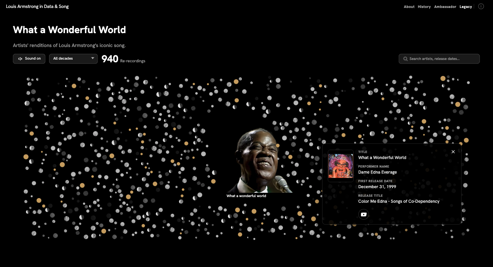
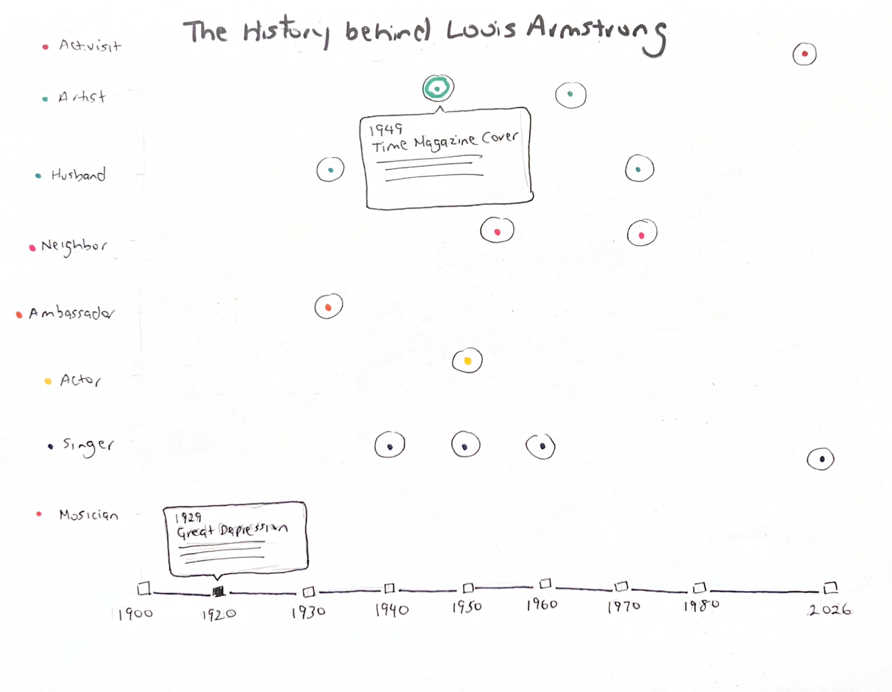
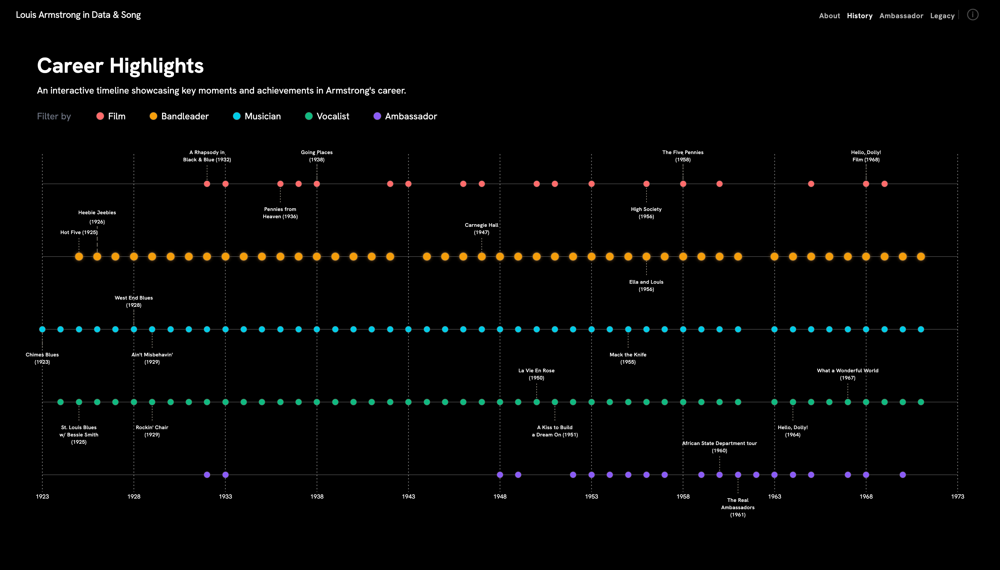
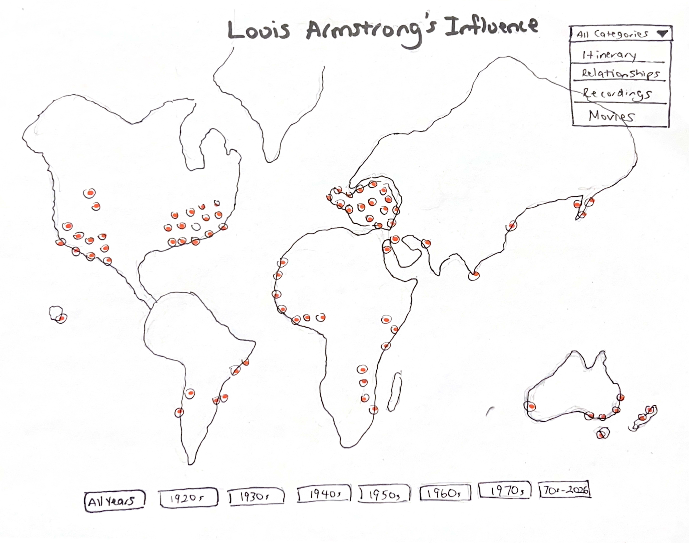
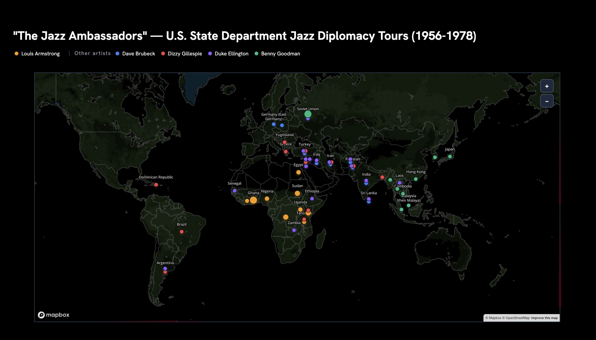
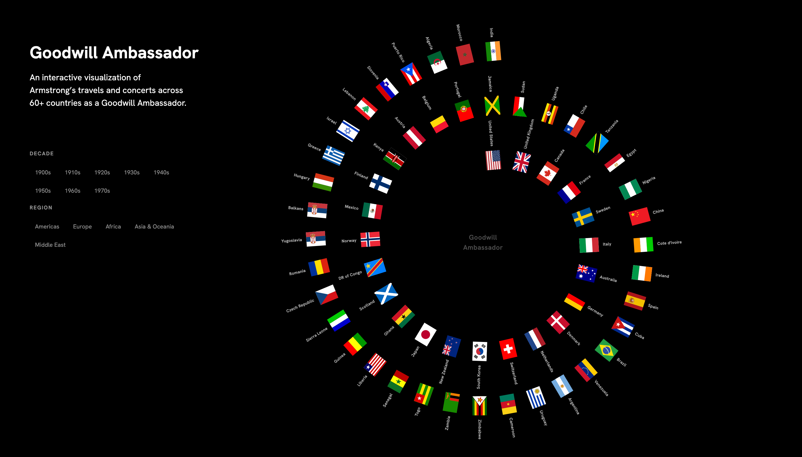
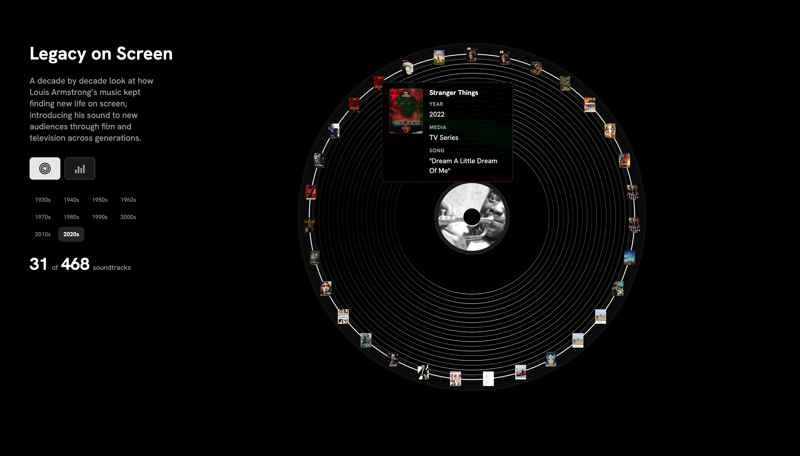

Louis Armstrong in Data and Song
Designer & Developer · Timeframe: 3 months · Team: Solo project
Clickable iframe — the full archive, filters and AI features
Overview
More than an entertainer — a cultural ambassador who shaped American identity
This project is my Master's thesis for the MS in Data Visualization at Parsons School of Design, presented at the 2026 Keynotes. It brings greater attention to Louis Armstrong's role as a cultural ambassador by examining how his career helped carry jazz and American culture across the world. Through data and archival research, it argues that Armstrong was more than an entertainer. He was a central figure in the making of modern American cultural identity at home and abroad.
I approached this as a data project first and a design project second. Using Python notebooks, I parsed and analyzed data pulled together from multiple sources — The Louis Armstrong House Museum archives, published discographies, and film records gathered from IMDb — cleaning and reconciling formats that were never meant to sit together. From that analysis I produced structured JSON files: one clean data model per visualization, shaped specifically for what each view needed to show.
Collaboration
The Louis Armstrong House Museum
This project was developed in close collaboration with the Louis Armstrong House Museum in Corona, Queens. The Museum opened its archives to me and provided historical expertise, guidance, and support through weekly meetings across the life of the project — shaping both the questions I asked and the data I was able to build from. The Museum celebrated the work at the 2026 Keynote address.
Approach
Data project first, design project second
By combining biography with data-driven presentation, it helps viewers see how Armstrong's music evolved and how his influence spread across jazz and popular music. The result is both an educational tribute and an interactive way to explore the life of one of the most important figures in American music.
Through a combination of archival research, historical analysis, and data visualization, this project offers a new interpretation of Louis Armstrong as a foundational cultural figure whose influence continues to resonate today.
Sketches to Design
Testing ideas on paper before committing them to code
Before writing any display code, I sketched each visualization by hand. Working the ideas out on paper let me test which chart forms actually surfaced the story, the reach of the tours, the volume of recordings, the gap between the ambassador image and the reality before committing them to code. Once a sketch earned its place, I designed and built that visualization from the JSON, tuning the interaction and the visual detail directly in the browser.

What a Wonderful World Sketch

How one song was re-recorded and reinterpreted across generations.

Timeline Sketch

Decades of recordings, and the career inflection points that shaped his reach.

Map Sketch

The State Department sent Armstrong and other jazz artists abroad as ambassadors of American culture — jazz as diplomacy.
Expanding the Story
Unexpected stories that emerged from the data
The deeper I went into the data, the more stories surfaced that deserved their own view. Several visualizations that weren't part of my original plan made it into the final project, each one enhancing the narrative and revealing a facet of Armstrong's influence I hadn't anticipated at the outset.

The countries Armstrong reached as America's jazz ambassador, official and unofficial, over a lifetime of touring.

468 soundtracks and counting — how Armstrong's music lived on across film, television, and games, long after his death.
Reflection
Deciding what not to show
The hardest part of this project wasn't the code — it was deciding what not to show. Armstrong's archive is vast, and every dataset opened three more questions. Working weekly with the Museum's historians taught me to let the historical argument drive the visualization rather than the reverse: each view earned its place only if it advanced the thesis. That discipline shaped every decision, from which chart form to use to what got left on the cutting-room floor.
What the Data Revealed
The scale of the reach is the argument
Taken together, the visualizations make a case that's difficult to make in prose alone: the scale of Armstrong's reach is itself the argument. Sixty countries toured as a cultural ambassador. 468 soundtracks and counting, decades after his death. He wasn't a musician who happened to travel — he was a cultural institution the United States sent abroad, and whose work kept circulating long after he stopped recording. Laid out as data, Armstrong reframes from entertainer to architect of how the world came to hear America.
The project was presented at the 2026 Parsons Data Visualization Keynotes and celebrated by the Louis Armstrong House Museum.